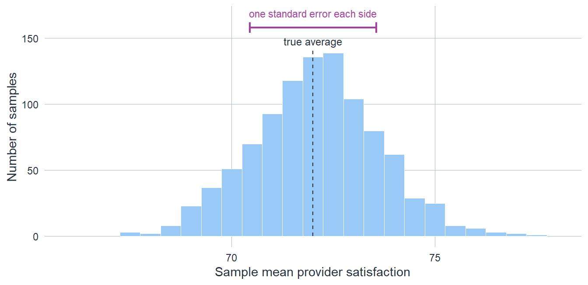

![Four archery targets, each with concentric rings and a bullseye at the centre, arranged in a two-by-two grid. Top-left, labelled accurate and precise: a tight cluster of arrow points right on the bullseye. Top-right, accurate but imprecise: points spread widely but centred on the bullseye. Bottom-left, precise but biased: a tight cluster sitting up and to the right of the bullseye, away from centre. Bottom-right, biased and imprecise: a wide spread sitting up and to the right, off centre. Precision is how tight each cluster is; accuracy is whether the cluster is centred on the bullseye.](07-statistical-inference_files/figure-html/fig-archery-target-1.png)
7 Statistical Inference
7.1 From a Sample to a Population
A care home in your region has recorded 30 per cent more falls than the national average over the past six months. That is not a number to wave away. Six months of consistently elevated falls is a real signal, not the sort of blip a single bad week produces, and it deserves attention. But a signal is not yet a verdict. Counts of comparatively uncommon events bounce around from month to month; small homes bounce around more than large ones; and “the national average” is itself only an estimate. What you want to know is the home’s true underlying falls rate – the rate that would show through if the month-to-month noise settled – and what you actually hold is six months of counts. Reasoning carefully from the one to the other, and being honest about how far the data let you go, is the work of statistical inference.
That reasoning has a standard shape, and it is worth naming its parts precisely, because they are easy to run together. The population is the complete collection of units you want to draw a conclusion about: every care home in England, say, or – when the unit is a stretch of time – every month this home runs under its current management. A parameter is a fixed numerical feature of that population: the average falls rate across all homes, or this one home’s true underlying rate. The parameter is what you actually care about, and it is unknown. The sample is the slice you observe: the 200 homes that returned data, or this home’s six months of counts. From the sample you compute an estimate – a number meant to stand in for the parameter. Population and parameter are the reality you are after; sample and estimate are what reach you; inference is the bridge. Keeping the population (a set of units) distinct from the parameter (a number describing them) is the first discipline of the subject: a great deal of confused statistics comes from sliding between the two.
This is also where a change of notation pays off, and it is worth saying plainly where it comes from. Some quantities you could compute exactly only if you held the whole population at once – full information. Others are what a sample actually gives you – partial information, a realisation that would have come out differently from a different sample. To keep the two apart, statistics writes them with different symbols. The population mean and standard deviation, the theoretical quantities full information would settle, are written \(\mu\) and \(\sigma\). The mean and standard deviation you compute from the data in hand are written \(\bar{x}\) and \(s\). The chapter on describing data used \(\mu\) and \(\sigma\) throughout, because there the data in hand were the whole of what it set out to describe. The moment you treat your data instead as a sample standing in for something larger, \(\bar{x}\) and \(s\) become estimates of the unknown \(\mu\) and \(\sigma\) – and it is that move, from a number you have to a claim about one you do not, that this chapter is about.
It is worth being concrete about what the population and sample really are in regulatory work, because the honest answer is rarely the tidy one the textbooks assume. The cleanest case is a genuine random sample from a fixed population, and CQC does work with data of this kind: national patient and staff surveys, for instance, draw from a defined population by design. But surveys bring their own difficulty. People choose whether to respond, and those who respond can differ systematically from those who do not, so what returns is often not a random sample of the population but a self-selected slice of it. Other data are administrative rather than sampled: registration records, statutory notifications, and inspection histories that in principle cover every provider of a type. Even there, “the whole population” is more aspiration than fact – records lag reality, changes go unrecorded, providers fail to report, and definitions drift over the years, so completeness is never guaranteed. Naming the population first, and asking honestly how the data in hand came to be the data in hand, is the part of inference the formulae cannot do for you. A standard error answers exactly one question – how much an estimate would wobble from one random sample to the next – and it answers that well; it says nothing about a population that was never randomly sampled, nor about the providers whose data never arrived.
7.2 What Makes an Estimate Good
Most inference rests on an estimation procedure, and to judge one well it helps to separate three things a single sentence usually blurs. The estimand is the unknown quantity you are actually after – the home’s true falls rate, the proportion of all homes that are genuinely good. It is a fixed feature of the population, and you never see it directly. The estimator is the recipe you apply to the sample to approximate the estimand – “take the mean falls rate of the homes that reported,” say. It is a procedure, fixed before you see any particular data. The estimate is the number that recipe returns when you feed this sample in: 45 falls per thousand bed-days. Change the sample and the estimand stays put, the estimator stays put, and only the estimate moves. A point estimate is one such number – your single best guess. But a guess with no sense of its own quality can mislead as easily as inform, and the deepest habit in this chapter is judging that quality, for which there is no better picture than archery.
Picture the estimand as the bullseye and each estimate as an arrow loosed at it. Two quite different things can go wrong, and keeping them apart is the single most useful distinction in the subject. Accuracy – or its absence, bias – is whether your arrows are centred on the gold or pulled systematically to one side. Precision is whether they land close together or scatter widely, regardless of where their centre sits. The two are independent: you can have a tight cluster sitting well off the mark (precise but biased, confidently wrong), a loose spray that happens to centre on the target (accurate but imprecise), or any combination, as the four targets below lay out.
Real archery has a feature regulatory work lacks: the archer sees where each arrow lands and can correct. Inference is archery at a target you cannot see. You loose your one arrow and the gold stays hidden, so you never learn directly how far off you were – and the target is in a different place for every provider, because each has its own unknown true rate. This is why the two failures matter so unequally. Imprecision is the honest one: a scattered group openly admits it is unsure, and more data pulls the arrows together. Bias is the dangerous one, because nothing in the data announces it. A tight group looks authoritative whether or not it sits on the gold, and gathering more data only tightens a group that is aimed at the wrong place. So when you are deciding whether to trust an estimate, “could this be biased?” is the sharper question than “how precise is it?” Precision you can see and improve; bias you have to reason about.
If you cannot see where a single arrow lands, how can you say anything about precision at all? The answer is the quiet engine of frequentist inference: you reason about the shots you would take. Imagine loosing your arrow not once but again and again, under the same conditions – drawing a fresh sample each time and recomputing the estimate. Each arrow in this extended picture is a fresh sample; the bullseye is the unknown parameter; and the pattern the arrows make – how tightly they cluster, and whether their centre sits on the gold – is what statisticians call the sampling distribution. All the probabilities of this chapter attach to that imagined pattern, not to the single arrow in front of you. The remarkable part, which the next section turns on, is that you can describe that whole pattern from the one sample you actually hold.
7.3 From One Sample to Many: the Standard Error
Imagine, then, drawing your sample again and again from the same population and computing the estimate each time. Those estimates would not agree; they would scatter into a distribution of their own – the sampling distribution of the estimate. Its spread is the precision of your method: a narrow sampling distribution means the estimate barely moves from sample to sample, a wide one means it is at the mercy of which sample you happened to get. The standard deviation of that imagined scatter has its own name, the standard error. For a mean it works out as the standard deviation of your single sample divided by the square root of the sample size – and that is the whole trick: both ingredients, the spread of the data and the size of the sample, are things one sample already gives you, so you never have to draw the rest. The picture below shows the imagined scatter for one estimate, the mean.

Two properties of the standard error are worth holding on to. First, it shrinks as the sample grows – but slowly, in proportion to the square root of the sample size, so that quartering the uncertainty takes sixteen times the data. This is the arithmetic behind a recurring regulatory fact: large providers can be pinned down precisely, while small ones cannot, however carefully you analyse them. Second, the standard error is a measure of precision only – a particular summary of the spread of the sampling distribution, not the full picture of its shape. It says nothing about whether that distribution is centred on the truth. In the archery image, it is how tightly the arrows group, not how far the group sits from the unseen gold. If your sample is unrepresentative – the silent providers differ from the responding ones – the whole sampling distribution slides off the bullseye, and the standard error, computed from the sample you have, will not breathe a word of it. Precision is visible; bias is not.
The deeper point behind the sampling distribution is what makes frequentist inference work at all. For many common estimators, the shape and spread of the sampling distribution can be described mathematically – under stated assumptions, and often without needing any sample beyond the one you hold. Bias and precision are therefore properties of the procedure, not of any particular result: if the recipe is unbiased, its estimates cluster around the truth on average across all the samples it might ever receive, regardless of which one you drew. The stated assumptions are not decorative. The standard formula \(s/\sqrt{n}\) for the standard error of a mean assumes, among other things, that each observation is drawn independently. Cluster the providers, stratify the sample, or introduce unequal selection weights, and the formula changes – use the simple version on a complex design and the interval will look narrower than it should be. Naming the sampling design at the outset, before computing anything, is part of the work of inference, not an optional preliminary.
7.4 Confidence Intervals
A point estimate plus a standard error is already an honest statement: here is my best guess, and here is how much it would wobble. A confidence interval packages the two into a range, and it is the form most worth reporting, because it carries the uncertainty on its face.
Before reading one, it pays to defuse a piece of cargo cult. Intervals are very often quoted at “95 per cent,” and the figure is so familiar that it can seem to come from the mathematics itself. It does not. The level is a choice, a dial you set, and 95 per cent is merely a convention with no special claim on the truth. To keep that visible, this chapter quotes an 89 per cent interval instead – a deliberately unround number, chosen for no reason except that it makes the arbitrariness impossible to forget. An 89 per cent confidence interval for the home’s falls rate of, say, 39 to 51 per thousand bed-days says: the estimate sits around the middle of this band, and values across the band are all guesses for the unknown parameter that are reasonably consistent with what we observed.
What the “89 per cent” means deserves care, because the natural reading is the wrong one. It is tempting to say “there is an 89 per cent probability the true rate is between 39 and 51.” That is not what a confidence interval claims. The true rate is a fixed number; it is either in this particular interval or it is not. The 89 per cent is a property of the method, not of this one interval: across the imagined long run of fresh samples, roughly 9 out of 10 of the intervals the procedure produces would contain the true value. The figure below makes the distinction concrete by doing exactly that.

Two practical points follow. The width of the interval is set by the standard error, so the same forces apply: more data and less variability both narrow it, and a small provider carries a wide interval no matter what. That width is a feature, not a defect – it is the analysis telling you the truth about how little it knows. The mistake is to read a wide interval as “no signal” and quietly drop the provider. A small home with a high estimated falls rate and a wide interval has not been cleared; it has been flagged with uncertainty, and from a regulatory standpoint potential harm that cannot be ruled out is a reason to look, not to look away. Statistical certainty and regulatory priority are not the same axis.
7.5 Hypothesis Testing
Estimation answers “how large, and how sure?” A hypothesis test answers a narrower question: “how convincingly is what we are seeing more than noise?” It is a more limited tool than estimation, and once you have an interval you have often answered the test already – but its vocabulary is everywhere in practice, so it pays to understand it precisely.
In its most common form, hypothesis testing is a contest between two stated possibilities. The null hypothesis is the position you provisionally adopt: typically the ordinary state of affairs – business as usual, the world as it would be if nothing had changed. This home’s true falls rate equals the benchmark – the national reference rate used as the comparator; the new staffing model made no difference; the two regions score alike. The alternative hypothesis is the possibility under consideration: that the rate differs, that the model helped. You then ask: would we expect to see data like this, if the null hypothesis were true? The p-value gives one answer – it is the probability, under the null hypothesis, of observing data as extreme as yours or more so. A small p-value means the data sit awkwardly with the null: they would be a surprising coincidence if business as usual were the whole story, so the sample carries some evidence that something may be going on. Not proof. A large p-value means the data are unremarkable under the null; it does not follow that the null is true, only that these data cannot rule it out.
To reach a decision from a p-value, you compare it against a pre-chosen significance level – written α (alpha) – that you fix before looking at the data. If the p-value falls below α, you reject the null; if it falls above, you do not. The most familiar threshold is α = 0.05 (5 per cent), but this carries no special mathematical authority; in regulatory settings other values are often more defensible. The choice of α is a prior judgement about the maximum false-positive rate you are prepared to accept, and it should be stated and justified, not silently inherited from a textbook.
Nothing in this procedure delivers certainty in either direction, and the most common way to misread a test is to imagine that it does.
Because a test ends in a decision – treat this as noise, or act on it – it can be wrong in two ways, and naming them now, rather than as an afterthought, is the only honest way to use it. A false positive (known as a Type I error in this setting) raises the alarm on a provider that is in fact fine. A false negative (a Type II error) misses a provider that genuinely has a problem. The threshold you set for “surprising enough to act” trades one against the other: tighten it to cut false alarms and more real problems slip through; loosen it to catch more real problems and more false alarms follow. There is no setting that escapes the trade-off, only a choice about which error you would rather make – and, as the box below argues, that choice is not a statistical one.
7.6 Inferential Honesty
Lead with the estimate and its interval; reach for the test as a supplement, not the headline. An interval of 41 to 57 against a benchmark of 40 signals that the data are little compatible with the benchmark at the chosen level – while the range itself reveals the genuine uncertainty, since the true rate could plausibly sit barely above 40 or well above 50. A bare “the result is significant” tells you only that the computed interval excludes 40, and hides everything the range itself shows.
There is a subtler point worth holding: the interval’s edge is not a wall. By construction the interval marks a floor on compatibility – values within it are those the data most readily entertain at the stated confidence level, with values around the point estimate itself the most compatible of all, and compatibility declining continuously as you move outward from it. What moves here is the interval, not the benchmark: the benchmark is a fixed reference value – in the running example, the national rate of 40 – that the null hypothesis sets the parameter equal to; the interval is a random quantity whose realisation depends on the sample. Compatibility does not cliff-drop at the interval’s edge. Had the benchmark been set at 41 rather than 40 – just enough to sit inside this particular interval – the data would carry essentially the same information, yet the verdict would flip from significant to not significant. Any null value excluded by the narrowest margin is only marginally less compatible with the data than one that would sit just inside; the boundary simply marks where compatibility crosses the chosen floor. The interval therefore describes a region of greater plausibility, not a cage of acceptable values. And that makes the confidence level a choice as arbitrary as the 0.05 threshold: widen it from 89 to 99 per cent and the interval expands – a benchmark excluded at 89 per cent coverage may be covered at 99; narrow it and the reverse might occur. Adjusting the level after seeing the data to stretch the interval around – or away from – the benchmark is the same move as raising the p-value cutoff because the result just missed: it is shopping for a conclusion, not conducting an analysis.
Moving beyond interval estimation, once a test is in play the word significant arrives with it, and it carries more trouble than any other term in applied statistics.
Part of the trouble is the typical threshold. The 5 per cent line – p below 0.05 – is a convention, popularised by Ronald Fisher in the 1920s for agricultural field trials as a rough rule of thumb, not a law of nature and not a point where evidence switches on. Its persistence owes something to the era before computers: p-values then had to be read from printed tables that listed only a handful of critical values, and the round threshold of 0.05 was simply “just there”. Now that software produces exact p-values for almost any procedure, the rational basis for a fixed cutoff is even weaker than before. A p-value of 0.049 and one of 0.051 carry fundamentally the same weight; treating one as a triumph and the other as a failure reads a continuous measure of surprise as if it were a switch. Even the originators of significance testing knew this: as Edgeworth put it as early as 1885, a result that passes the test “is not certainly important,” and one that fails it “is not certainly unimportant.” Report the actual value and let it weigh in proportion.
The deeper trouble is confusing statistical significance with practical significance. They answer different questions. Statistical significance asks whether an effect is distinguishable from noise; practical significance asks whether it is large enough to matter. Sample size drives a wedge between them. With a very large dataset, an effect far too small to act on – a fraction of a percentage point – will be statistically significant, because the standard error is tiny and even a trivial difference clears the bar. With a small dataset, an effect large enough to demand attention can fail to reach significance, because the standard error is wide. So significance never settles whether to act. The estimate and its interval do: look at the size of the effect and the range of sizes still consistent with the data, and ask whether anything in that range would change what you do.
Beneath all of this sits a quieter but more fundamental concern: the validity of every confidence interval and p-value depends on whether the assumptions of the procedure hold. These are not bureaucratic formalities; they are what makes the stated probabilities meaningful. An interval computed from a clustering design using a simple-random-sample formula does not have 89 per cent coverage – its true coverage is unknown, often narrower than advertised. A test applied to data that violates its independence assumption can produce p-values that catastrophically understate uncertainty. The habit to build is: name the assumptions before running the analysis, check what you can, and flag what you cannot. Inference that glosses over failed assumptions is not cautious inference – it is confident inference pointing in an unknown direction.
A final caution belongs to how CQC analysis is actually done. The formal guarantees of a test assume the question and the analysis were fixed in advance. For many analyses, it is the opposite: you look at the data, notice something, try another cut, exclude an odd record, follow a hunch. That flexibility is how you learn from data nobody designed, but it quietly inflates apparent significance – every data-driven choice is a fork the statistics cannot see, so p-values come out too small and intervals too narrow. The practical consequence is the posture of this whole chapter: treat a significant result as a reason to look, not as proof of what you will find. The strongest evidence at CQC is rarely a single significant number; it is the same signal showing up across sources that we would not believe to be all wrong in the same way.
7.7 Where This Leads
This chapter has stayed deliberately conceptual, because the ideas here – sample and population, the aim and steadiness of an estimate, the honest expression of uncertainty, the gap between significance and importance – are the foundation the methods chapters build on, each applying them to a particular tool.
- Z-scoring turns the distance of a provider’s estimate from the benchmark into a flag, with everything in this chapter standing behind the word “significant.”
- Statistical process control reads a sequence over time, treating a point beyond the control limits as a signal much as a test treats a small p-value.
- Comparing groups with t-tests applies hypothesis testing and confidence intervals directly, and is where the effect-size measures that formalise “how large?” – and the corrections needed when many hypotheses are tested at once – are set out.
- Correlation carries the same logic over to linear relationships between variables.
- Handling missing data builds on the bias-versus-precision distinction drawn here: an inference is only as trustworthy as the assumption that what is missing has not shifted the aim.
- The chapter on quality assurance sets out how to document the estimates, intervals, and threshold choices a defensible analysis rests on.
The thread tying them together is the posture of this chapter: in regulatory work, inference points you towards where to look. It is the start of an investigation, not the end of an argument.